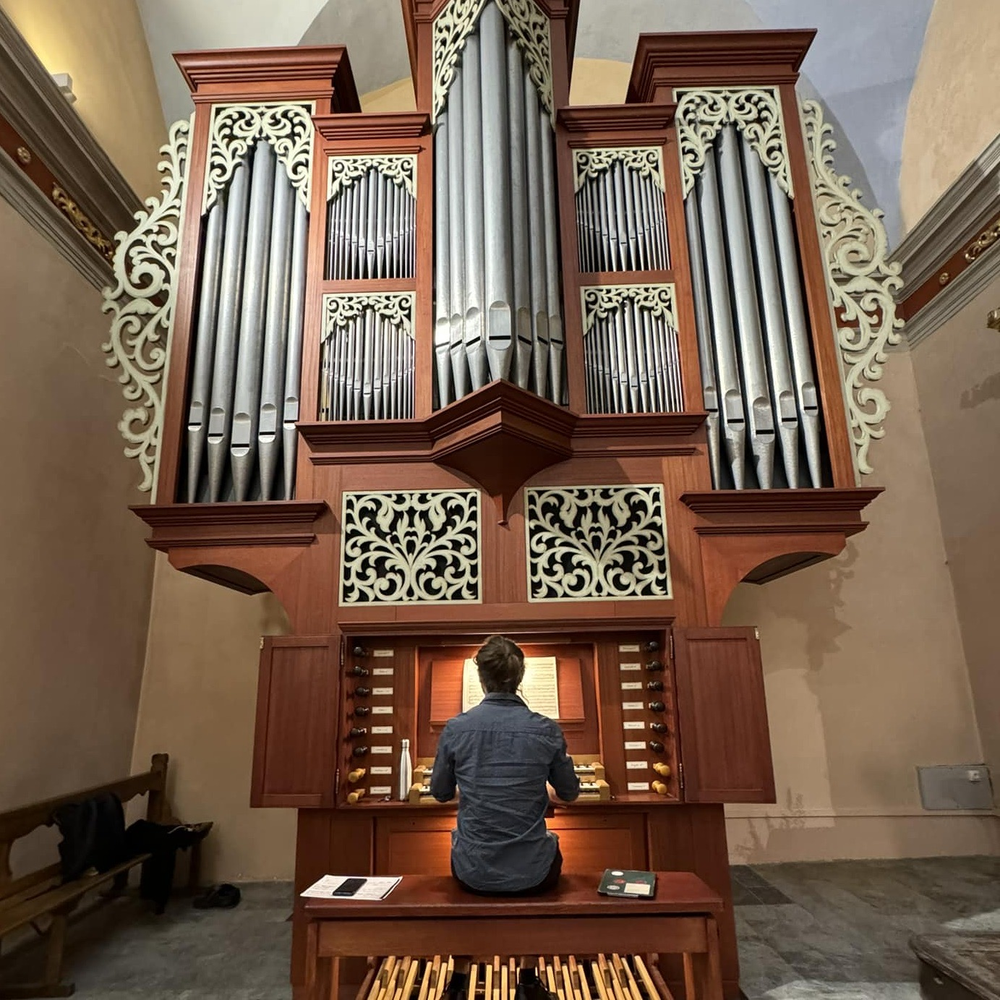
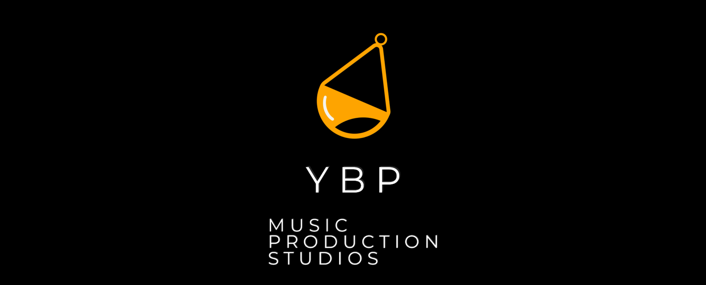
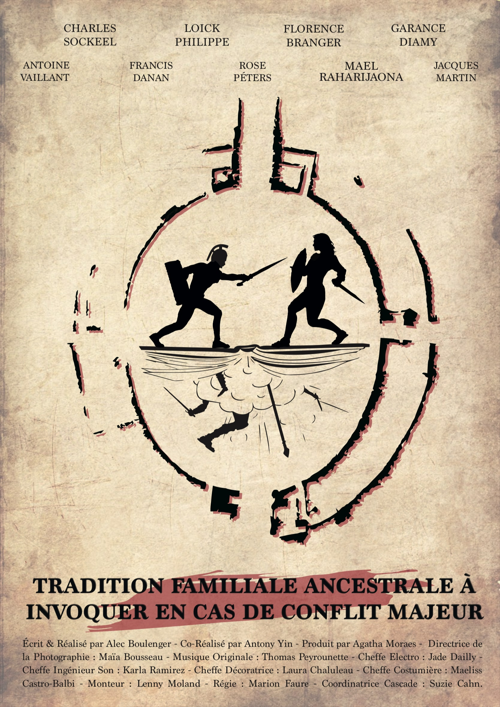
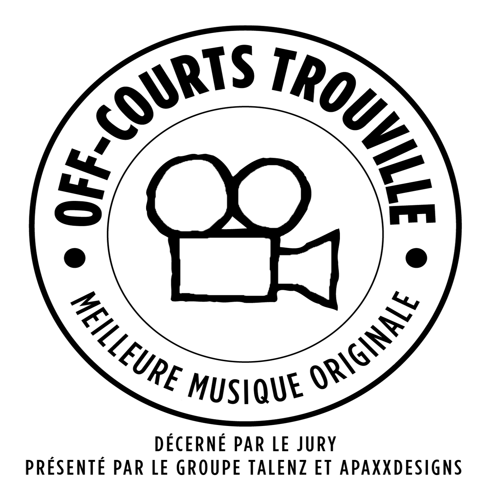
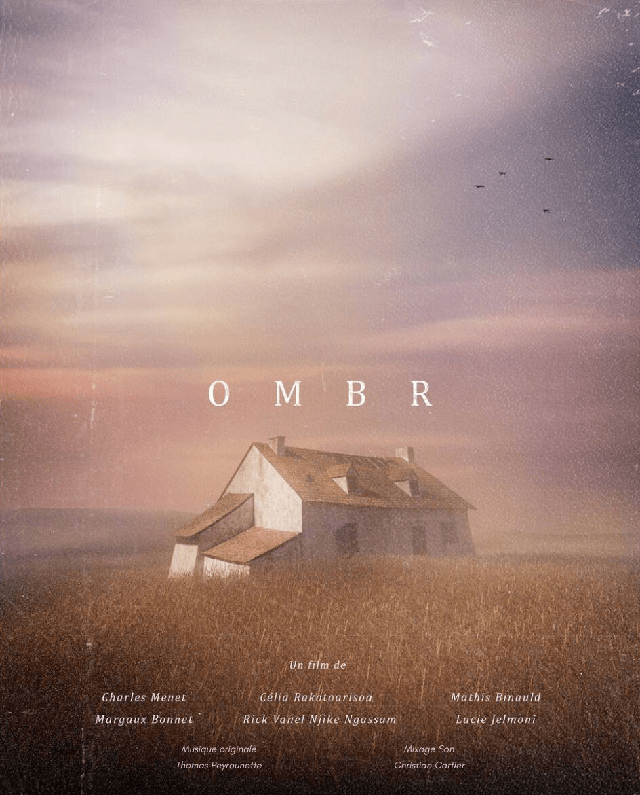

A propos
"J'ai commencé la musique à l'âge de 7 ans
par
l'apprentissage de la clarinette dans l'école de musique d'Orthez, où j'ai pu développer une
expérience de musicien d'orchestre dans différents types de formations, et où j'ai également
obtenu mon CEM quelques années plus tard.
Compositeur à l'image
En septembre 2020, j'intègre la classe de Composition à l'image du Conservatoire
d'Annecy sous l'enseignement d'Olivier
Militon Antoine Dusacq (2022-2023), dans laquelle j'ai pu
collaborer en tant que compositeur sur divers projets avec des réalisateurs et réalisatrices
d'animations, de films, mais aussi de jeux vidéo.
Depuis octobre 2022, je travaille en tant que co-compositeur avec Anthony Touzalin Emotive Muzik,
Je termine le cursus de Composition à l'image en juin 2023, après quoi je lance ma
carrière professionnelle en collaborant avec divers projets indépendants, à la fois en musique à
l'image mais également en tant qu'arrangeur musical pour une troupe de comédie musicale parisienne
Singing On The Roof .
C'est en octobre 2024 que je co-fonde le studio de production musicale YBP Studios avec Guillian Marquer
Organiste
En parallèle de mes études de Composition à l'image, j'ai intégré la classe d'orgue
de Thibaut Duret l'Ecole de Musique des Aravis (EMA) . Accepté
en CPES (Classe Préparatoire aux Etudes
Supérieures) en juin 2024, je construis mon parcours afin de poursuivre sur la voie d'organiste
concertiste.
Prochaines dates :
- Le 19 août 2026 à 21h : Eglise
du Grand-Bornand

Eglise Saint-Pierre, Argentière
Eglise Saint-Maurice, Annecy
Pianiste
Après avoir enseigné le piano dans l'école de musique Altermusique en 2023-2024, je suis depuis
septembre 2024 professeur de piano et de formation musicale dans l'Ecole
Intercommunale de Musique d'Epagny Metz-Tessy (LEIM) ainsi que pianiste accompagnateur de
chœurs.
Distinctions :
Finaliste à deux reprises en 2021 et 2022 au European Talent Competition
organisé par Soundtrack Cologne .
Finaliste du concours Le 7e son en 2022, organisé par l'ICART
Lyon et l'Université Lyon 2 .
CEM Clarinette (Orthez, 2016)
Entrée CPES Orgue (CRR Annecy, 2024)
Licence: Musicologie et ethnomusicologie (Université Toulouse - Jean Jaurès, 2020)
DEM Formation Musicale (CRR Toulouse, 2020)
DEM Ecriture/Orchestration (CRR Annecy, 2023)
DEM Composition à l'Image (CRR Annecy, 2023)
DEM Composition musicale contemporaine (CRR Annecy, 2025)
YBP Studios
En octobre 2024, je co-fonde et travaille au sein du studio de production musicale YBP Studios avec Guillian Marquer

Bande Annonce de YBP Studios
Compositions
Dernières parutions
Compositions instrumentales
Fantaisie pour orgue en ré mineur
Dans le cadre de la validation de mon BEM d'orgue en avril 2024, un projet personnel était demandé en
plus d'un programme de morceaux donné.
Quelques mois après, en juin, j'ai eu la chance de la rejouer dans l'Eglise
Saint-Maurice
Compositions MAO
Starry Sky
Arctic Swells
Electrojazzy Day
Echoes
Illuminate
Night Race in the City
Reborn
Paths
Birth of Light
Musique à l'image
Actualités
Un an après sa sortie sur
Arte , je suis
heureux de vous partager mon travail sur
L'Île de La Réunion, laboratoire de
l'évolution , documentaire réalisé par la société
NOMADES . J'ai eu l'occasion à nouveau de
travailler au sein du studio
Emotive
Muzik en tant que co-compostieur aux côtés d'
Anthony Touzalin .
Ça y est ! Après 18 mois de diffusion exclusive sur
CANAL+ Group et de course en
festival,
Au 8eme Jour , film d'animation de l'école d'animation
Piktura , est disponible dans sa totalité
sur la chaîne Youtube de l'école.
Je vous invite à accéder à la fiche du film en cliquant sur son poster pour découvrir ce
magnifique projet !
Collaboration avec le réalisateur
Alec Boulenger ,
étudiant au
Cours Florent .
Moyen-métrage de 30min qui a reçu la nomination du meilleur scénario et de la meilleure
réalisation au sein de l'école, et pour lequel j'ai eu le plaisir de composer la musique
originale.


üèÜ R√©compense üèÜ
J'ai eu l'honneur de remporter le prix de la
Meilleure Musique Originale au prestigieux
festival
Off-Courts de Trouville
pour le film "
Au 8eme jour ".
C'est le premier prix de ma jeune carrière de compositeur, merci encore à l'école
Piktura ainsi qu'à toute l'équipe du projet !
En collaboration avec l'école d'animation
Piktura , j'ai eu le plaisir de
composer
la musique originale de ce beau projet de fin de licence,
OMBR .

La vérité sur les envahisseurs , documentaire animalier.
Dernières diffusions en direct à la télé pour l'épisode 1 le
10-02-24 à
06h20 , et
pour l'épisode 2 les
10-02-24 à
07h05 et
22-02-24 à
07h05
sur
Arte .
Catégories
Playlists
Animations
Jeux vidéo
Prise de vue réelle
Documentaires
Interviews
Sites internet
Animations
Exercices à l'image
OMBR (2024)
Film d'animation réalisé par Charles Menet , Mathis Binauld , Lucie Jelmoni ,
Margaux Bonnet , Célia Rakotoarisoa et Rick Vanel Njike Ngassam , étudiant.e.s à
l'école d'animation Piktura
Synopsis : Les souvenirs d'une ancienne famille refont surface à travers les murs
d'une vieille maison inhabitée.
Le film
Au 8eme Jour (2023)
Film d'animation réalisé par Agathe Sénéchal , Alicia Massez , Elise Debruyne ,
Flavie Carin et Théo Duhautois , étudiant.e.s à l'école d'animation Piktura
Film concourant à de nombreux festivals depuis sa sortie en 2023 et ayant été primé à de multiples
reprises : Liste des Prix et Sélections
Il a été sélectionné par la prestigieuse chaîne de télé Canal+ Dimanche 9 juin 2024 à 22h20 sur CANAL+ Group
üèÜPrix de la meilleure musique originale üèÜ
En septembre 2024, j'ai eu l'honneur de remporter le prix de la Meilleure Musique Originale au
prestigieux festival Off-Courts de
Trouville Piktura
Synopsis : Il a fallu sept jours pour créer le monde, il n'en aura fallu qu'un
pour
bouleverser son équilibre.
Le film
Au 8eme Jour - Prix et Sélections
48 Prix :
Award of Best Original Soundtrack
Special Mention, Technical Achievement Grand Prize of the International Competition Youth Jury Prize "conscientiousness" Jury Prize Award for best animated short film
Award of the town of Puy Special Mention of Youth Jury Image Prize Best animated short film Trickstar Nature Award Best animated movie Award of best short film Professional Jury Prize Award of best short film Special Mention Jury Prize Award of "Promising Animated Short Film" Award of best animation short film Jury Prize of Youth Competition Student Jury Prize Young Creative Awards Award of Best Animation short film Award of Best Film Award for Best Student Animated Short Award of Best Animation short film Voyager Award CIMA Award of Best Filmmaker Animation Special Mention Competition Award Short and Green Student Film Special Mention Best Student Storyline Film Best Short Film (12-14 years old) Special Mention Best Animation Short Award Youth Price Best Animated Short Special Mention Best Student Film Special Mention Special Mention Best foreign film Public Prize Best Environmental International short film Nomination Award Best International Student Short Film Award of best animation short film - popular jury prize Best in show (1st Prize)
221 Sélections :
SLASH Fantastic Film Festival / Vienna, AUSTRIA
Festival du Film d'Animation de Tournus / Tournus, FRANCE
La petite fille, le feu follet et Pascal le lapin (2023)
Film d'animation réalisé par Rose Rabin et Julie Correia , étudiantes à l'école
d'animation Piktura
Synopsis : Dans un univers étrange, une jeune fille cherche avec insistance à vendre
les snacks du restaurant de sa famille, en dépit du fait qu'elle est maintenant morte. Un
feu follet apparaît pour l'emmener dans l'au-delà, mais elle reste dans le déni sur sa
situation. Jusqu'à ce qu'elle rencontre l'esprit d'un lapin qui la rassure et l'accompagne
par delà les limbes.
Bande annonce
Film d'animation réalisé par Océane Lavergne , Benjamin Langagne , Pierre
Cilluffo , Marine Beuvain , Lucas Durot et Kerrian Detay , étudiants à
l'école d'animation Piktura
Film concourant à de nombreux festivals depuis sa sortie en 2022 et ayant été primé à de multiples
reprises : Liste des Prix et Sélections
Synopsis : La déambulation d'un vieil homme à bicyclette.
Le Film
A Bicyclette - Prix et Sélections
14 Prix :
Promising Animated Short Best Visual Design 1st Prize Special Mention Jury Prize of the City of Tournus Best Animation Special Mention Professional Jury Prize (Animation Category) Best Animation Short Film of the Year - 3D Animation - Highly Commended Best Animation Best Editing (Animation Category) Best Animation Short Award 1st Prize (Animation 3D)
77 Sélections :
Short Shorts Film Festival & Asia / Tokyo, JAPAN
Animest International Animation Film Festival / Bucharest, ROMANIA
Animateka International Animated Film Festival / Ljubljana, SLOVENIA
ANIMA Animation Film Festival / Brussels, BELGIUM
SPARK ANIMATION / Vancouver, CANADA
SIGGRAPH ASIA / Daegu, SOUTH KOREA
ANIMAC International Animation Film Festival of Catalonia / Lleida, SPAIN
Flickers' Rhode Island International Film Festival / Providence, USA
Chicago International Children’s Film Festival (CICFF) / Chicago, USA
Festival International de Cinéma d'Animation de Meknès (FICAM) / Meknes, MOROCCO
ISCA International Students Creative Award / Osaka, JAPAN
China International Cartoon and Animation Festival (CICAF) / Hangzhou, CHINA
ANIWOW! International Student Animation Festival / Beijing, CHINA
LA Shorts International Film Festival / Los Angeles, USA
Sharjah International Film Festival for Children / Sharjah, UNITED ARAB EMIRATES
BANJALUKA International Animated Film Festival / Banja Luka, BOSNIA
FIFAVA International Short Film Festival / Anglet, FRANCE
Animation Dingle Festival / Dingle, IRELAND
CARTOONS ON THE BAY / Pescara, ITALY
Best Of Écoles d’Anim’ 2023 | Festival International du Court Métrage / Lille, FRANCE
TAYF International Short Film Festival / Istanbul, Türkiye
Carrefour du Cinéma d'Animation / Paris, FRANCE
BCN Sports Film Festival / Barcelona, SPAIN
Festival du Film d'Animation de Tournus / Tournus, FRANCE
Festival ENKARZINE / Zalla, SPAIN
Aguilar Film Festival / Aguilar de Campoo, SPAIN
Festival La mida no importa / Barcelona, SPAIN
Festival Music & Cinema Marseille (MCM) / Marseille, FRANCE
Happy Valley Animation Festival / State College, USA
Festival La Fila de Cortometrajes / Valladolid, SPAIN
Catch the Moon International Children & Youth Animated Film Festival / Naples, ITALY
FERFILM International Film Festival / Ferizaj, KOSOVO
Santiago del Estero Film Festival (SEFF) / Santiago del Estero, ARGENTINA
Student Cuts Film Festival / Ljutomer, SLOVENIA
Festival National du Court Métrage Étudiant / Paris, FRANCE
Festival del Cinema di Cefalù / Cefalù, ITALY
Festival Corto Ciudad Real / Ciudad Real, SPAIN
Festival Internacional de Animación Caribetoons / Santa Marta, COLOMBIA
VAFI & RAFI International Children and Youth Animation Film Festival / Rijeka, CROATIA
SUPERTOON International Animation Festival / Šibenik, CROATIA
Animadeba International Animation Festival / Deba, SPAIN
Imaginaria Film Festival / Conversano, ITALY
Constantine's Gold Coin International Animated Film Festival / Niš, SERBIA
ANIMART Festival / Hydra, GREECE
The Unprecedented Cinema / Tallinn, ESTONIA
Tetova International Film Festival ODA (TIFF ODA) / Tetovo, NORTH MACEDONIA
PROVINZIALE Filmfest Eberswalde / Eberswalde, GERMANY
STAR FILM FEST / Sisak, CROATIA
CARTOON CLUB International Festival of Animation Cinema / Rimini, ITALY
Festival de Cine Estudiantil FENACIES / Montevideo, URUGUAY
Festival du Premier Court-Métrage / Pontault-Combault, FRANCE
Sedicicorto Forli International Film Festival / Forli, ITALY
Un Festival C'est Trop Court ! / Nice, FRANCE
Cortocircuiti Short Film Festival / Bari, ITALY
MUMIA Underground World Animation Festival / Belo Horizonte, BRAZIL
Chaniartoon International Comic & Animation Festival / Chania, GREECE
Portobello Film Festival / London, ENGLAND
SHORT FORM International Short Film Festival / Gornji Milanovac, SERBIA
Linea d'Ombra Festival / Salerno, ITALY
Festival du cinéma international en Abitibi-Témiscamingue / Rouyn-Noranda, CANADA
Shorty Week Film Festival / Cádiz, SPAIN
Early Bird International Student Film Festival / Sofia, BULGARIA
Animafantasia International Student Animation Film Festival / Iași, ROMANIA
Girona Film Festival / Girona, SPAIN
Animae Caribe International Animation & Digital Media Festival / Tunapuna, TRINIDAD AND TOBAGO
Arte Non Stop Festival / Buenos Aire, ARGENTINA
AIU Film Festival / Al Jahra, KUWAIT
Caminhos Film Festival / Coimbra, PORTUGAL
Euroshorts International Film Festival / Gdańsk, POLAND
Festival ON COURT À LA BALEINE / Onet-le-Château, FRANCE
Boise International Short Film Festival / Boise, USA
TINDIRINDIS International Animation Film Festival / Vilnius, LITHUANIA
Heroes International Film Festival / Rome, ITALY
ANIMAKOM FEST / Bilbao, SPAIN
Festival du Court-Métrage de Loubens-Lauragais / Loubens-Lauragais, FRANCE
24FPS International Animation Awards / Mumbai, INDIA
Tehran International Animation Festival / Tehran, IRAN
Growing Up (Ciné-concert, 2022)
Voici mon deuxième Ciné-concert que j'ai pu composer dans le cadre de mes études au CRR d'Annecy sur
un projet déjà existant. Le ciné-concert a été joué dans le cadre du Festival International du Film
d'Animation d'Annecy.
Le film a été réalisé par Lucas Cisterne , la musique originale composée par Isak
Hedlund et le mixage son réalisé par Clément Fortin .
Synopsis : Après la perte de ses parents, une petite fille grandit aux côtés de son
robot domestique et poursuit son rêve.
Le film
Le chêne et le roseau (Concours Le 7e son, 2022)
Le concours Le 7e son
Finaliste de ce concours avec "Le chêne et le roseau" je vous propose ici mon
travail sur ces images.
Réalisation : Laureline Lavandier Jean-Pierre Lavandier & James Manning James Manning
Le film
Magenta (2022)
Film d'animation réalisé par Naël Kadri , étudiant à l'école d'animation Pivaut
Synopsis : Lino, un jeune garçon de 15 ans, ne comprend pas le monde qui l’entoure. Il
sort prendre l'air et va alors être confronté au monde extérieur.
Le film
Motùna (2021)
Film d'animation réalisé par Mathilde Bertrand , étudiante en école d'animation chez Pivaut
Synopsis : Poursuivi dans une forêt, un jeune garçon tente d’échapper aux crocs acérés
de la bête qui le chasse. Mais l’enfant devra alors apprendre et comprendre qui il est pour
réaliser que les obstacles ne sont parfois pas ceux qu’on croit.
Le film
Les Ailes de Tota (2022)
Film d'animation réalisé par Hermine de Laganlerie , étudiante à l'école d'animation Pivaut
Synopsis : Tota est un centaure qui rêve de voler. Passionné par les oiseaux, il va un
jour faire la rencontre d'une créature céleste blessée.
Le film
Avec le temps (2021)
Film d'animation réalisé par Justine Gouvernet et Chloé Irles , étudiantes en école
d'animation chez ECV
Synopsis : Alors qu'elle rend visite à son mari souffrant à l'hôpital, Mme Richard se
remémore sa vie à ses côtés.
Le film
Chlorophylle (2021)
Film d'animation réalisé par Adèle Grall , étudiante en école d'animation chez Pivaut
Synopsis : Airi et Sasha ont l’habitude de s’amuser ensemble. Seulement ils
appartiennent à deux mondes différents ; Airi est une souris blanche, issue d’une famille
riche, Sasha est un chat noir, venant d’un milieu beaucoup plus modeste. La mère d’Airi voit
d’un mauvais œil cette relation et éloigne sa fille le plus possible de Sasha. Malgré leurs
différences, le lien fort qui unit les deux enfants leur permet de se retrouver des années
plus tard.
Le film
Coffee Break (2021)
Film d'animation réalisé par Selene Pitton , étudiante en école d'animation chez Pivaut
Synopsis : Alors qu'une grand-mère prépare son café, un super-héros combat un
super-vilain à sa fenêtre.
Le film
Sweet Cocoon (Ciné-concert, 2021)
Dans le cadre de mes études au CRR d'Annecy, j'ai eu l'occasion de composer un ciné-concert sur un
projet déjà existant afin d'être joué lors du Festival International du Film d'Animation d'Annecy.
Le film a été réalisé par Matéo Bernard , Matthias Bruget , Jonathan Duret ,
Manon Marco et Quentin Puiraveau .Anthony Juret , Baptiste Leblanc ,
Nicolas Montaigne et Pierre Nguyen .
Synopsis : Une chenille essaie désespérément de rentrer dans son cocon. Malgré de
nombreuses tentatives, elle n'abandonnera pas jusqu'à y être arrivée.
Le film
Exercice à l'image - Au revoir Jérôme (2024)
J'ai participé en avril 2024 au stage Viv'alto Julien
Bellanger
L'objectif de ce stage a été de composer une musique sur un film déjà existant en un temps restreint
de 3 jours sur un logiciel d'édition de partition (Sibelius) pour se mettre dans les conditions du
métier et
simuler le fait de pouvoir potentiellement faire jouer les partitions par de vrais musiciens par la
suite.
Le rendu audio ici passe par NotePerformer qui embellie les sons midi du logiciel Sibelius.
Seul le violon a été enregistré et sublimement joué par Virgil !
Synopsis : Tout juste arrivé au paradis, Jérôme se met en quête de sa femme Maryline.
Au fil de ses recherches, il s'enfonce de plus en plus dans un monde surréaliste et coloré
dans lequel personne ne semble pouvoir l’aider.
Exercice à l'image - Ratatouille (2020)
Exercice de composition à l'image durant ma première année du cursus au CRR d'Annecy.
Scène de course poursuite dans un film d'animation.
Le film
Exercice à l'image - Monstres & Cie (2020)
Exercice à l'image pour le concours d'entrée de la classe de composition à l'image d'Annecy en juin
(2020).
Extrait de Monstres & Cie.
Le film
Jeux vidéo
Take a Shot (Jeu vidéo, 2022)
Jeu vidéo réalisé par François Chapoule , Léo Gammel , Thomas Garrel , Pauline
Grosdidier et Marie-Emilie Guilleman , étudiant.e.s à l'école ECV de Lille
Synopsis : Un Youtubeur et son ami visitent une abbaye abandonnée pour faire une
vidéo. Rapidement, ils se rendent compte que le lieu n'est pas si abandonné que ça et notre
héros se retrouve isolé, avec appareil photo pour seule arme.
Gameplay
Hikari (2021)
Jeu vidéo réalisé par Florian Soret , Félix Leroy , François Chapoule et Lucas
Flamein dans le cadre de leurs études chez ECV Lille
Synopsis : Plongé dans le folklore japonais durant l'époque Edo, un jeune villageois
doit sauver le village des ténèbres en restaurant la lumière dans un temple sacré tenu par
l’Oni des Ombres.
The Epopee of Hylas (2023)
Jeu vidéo réalisé par François Chapoule , Marie-Emilie Guilleman , Florian Soret
et Edouard Stoppe dans le cadre de leurs études chez ECV Lille
Synopsis : Hylas, un petit félin humanoïde, est missionné afin de réparer les divers
bâtiments des îles ravagées par Hadès qui a emprisonné les Dieux, empêchant leur
intervention sur Terre. Hylas va pouvoir faire ses preuves en rénovant les habitations et
libérer le contact avec les Dieux.
Bande annonce
Prise de vue réelle
Exercices à l'image
Résistance en Racines (2024)
Film étudiant de l'ESCAT (École Supérieure de
Cinéma et d'Audiovisuel de Tours) réalisé par Mathilde Varenne . J'ai eu la chouette occasion
de collaborer avec l'équipe du film pour en composer la musique.
Synopsis : Dans un petit village de quelques habitants retraités, une compagnie menace
de tronçonner l'arbre en son centre. Mécontents, les villageois forment un groupe de
résistance afin de le protéger coûte que coûte.
Tradition Familiale Ancestrale à Invoquer en Cas de Conflit Majeur (2023)
Film réalisé par Alec
Boulenger Cours
Florent Pour accéder au casting du film ! ↩
üìΩÔ∏è Projections üìΩÔ∏è
29 Novembre 2023 : Salle Florent des Cours Florent (TFE)
1er Décembre 2023 : Club de l'Etoile cinéma, 14 rue Troyon
17 Janvier 2024 : Salle Florent des Cours Florent (Hivernales)
üèÜ Nominations üèÜ
Jacques 2024 du meilleur réalisateur (Cours Florent) : Alec BOULENGER
Jacques 2024 du meilleur scénario (Cours Florent) : Alec BOULENGER (Prix remporté)
Jacques 2024 du meilleur second rôle (Cours Florent) : Charles SOCKEEL
Synopsis : Lors d’un repas de famille, Alex, le cadet, décide d’empêcher son grand
frère Luca d’aller à la soirée d’anniversaire de son ex toxique. Pour cela, il fait appel à
la « Tradition Familiale Ancestrale à Invoquer en Cas de Conflit Majeur » : l’Arène…
Le film
Tradition Familiale Ancestrale à Invoquer en Cas de Conflit Majeur
Casting : Ecrit et réalisé par :
Co-réalisé par :
Directrice de production :
Producteur délégué :
Directrice photographie :
Musique Originale :
Avec : Loïck Philippe - Alex
Casting :
Assistant-réalisateur :
Scripte :
Image :
Assistants image :
Electro :
Ingénieur son :
Assistant son :
Décors :
Costumière :
Maquillage :
Photographe :
Directeur post-prod et Monteur :
Artiste VFX :
Etalonnage :
Régie :
Coordinatrice cascade :
Régleurs de cascade :
Moyens techniques :
UnVernunft (European Talent Competition, 2022)
Le European
Talent Competition Soundtrack
Cologne .
Honoré d'être à nouveau finaliste de ce concours, je vous fais part de ma
proposition musicale.
Le film
Mall (European Talent Competition, 2021)
Le European
Talent Competition Soundtrack
Cologne .
Honoré d'être finaliste de ce concours, je vous fais part de ma composition
musicale.
Le film
Mon Point Dans Ta Gueule (2021)
Mon point dans ta gueule est un film à prise de vue réelle réalisé par Oriane De
Figueiredo , Emeline Gradeler et Romain Jammet , étudiants chez les Gobelins: l'Ecole de l'Image
Musique composée en collaboration avec Lucas
Beaugas
Synopsis : Camille, une jeune scénariste, a le syndrome de la page blanche. Alors que
sa supérieure exige des résultats dans les jours qui suivent, elle décide de prendre l'air.
Munie de ses écouteurs, elle va alors laisser cours à son imagination face aux différentes
scènes de tous les jours.
Le film
Exercice à l'image - Monsieur & Madame Adelman (2020)
Exercice de composition à l'image durant ma première année du cursus au CRR d'Annecy.
Scène dramatique extraite du film Monsieur & Madame Adelman.
Le film
Exercice à l'image - Star Wars (2020)
Exercice de composition à l'image durant ma première année du cursus au CRR d'Annecy.
Scène de course poursuite dans un film d'action.
Le film
Eye of the storm (2020)
Projet personnel afin de m'exercer à la musique sur image, j'ai composé une musique et intégré le
sound design sur une partie du clip "Eye of the Storm" de Lovett.
Synopsis : Guidé par un halo de lumière à l'horizon, un homme brave les dangers à bord
de son vaisseau volant afin de s'en approcher.
Sites internet
Keskidi
Site internet réalisé par des étudiants chez les Gobelins: l'Ecole de l'Image
Musique composée en collaboration avec Lucas
Beaugas
Documentaires
L'Île de La Réunion, laboratoire de l'évolution (2024)
Documentaire Arte NOMADES Anthony Touzalin au sein du studio Emotive Muzik
Synopsis :
Le documentaire
La vérité sur les envahisseurs Episode 1 (2023)
Documentaire Arte NOMADES Anthony Touzalin au sein du studio Emotive Muzik
Synopsis : Ce documentaire découpé en 2 parties explore les différentes espèces
animales internationales importées en France par la mondialisation.
Le documentaire
La vérité sur les envahisseurs Episode 2 (2023)
Documentaire Arte NOMADES Anthony Touzalin au sein du studio Emotive Muzik
Synopsis : Ce documentaire découpé en 2 parties explore les
différentes espèces animales internationales importées en France par la mondialisation.
Le documentaire
Into the Clearing (2022)
Dans le cadre d'un exercice à l'image au sein du studio d'Anthony Touzalin , Emotive Muzik
Synopsis :
La lune brille, le jour se lève.
Dans une forêt transpercée par les rayons du soleil, un faon et sa mère.
Soudain, un bruit suspect se fait entendre. Après quelques secondes d'inquiétude et
d'inconnu, la source sonore apparaît, ce n'est autre que le roi de la forêt, le majestueux
cerf.
Le faon va alors à sa rencontre.
L'art de voir autrement (2023)
Documentaire indépendant réalisé par Olivier Marchal et présenté dans le cadre d'un lien entre
associations, Osons La Différence Les racines Martigianes
Valbonnaises Emotive Muzik
Synopsis : Ce documentaire nous fait voyager en Italie au sein d'un groupe de
personnes malvoyantes et non-voyantes pour un séjour touristique dans lequel ces derniers
vont visiter et profiter de l'Art sous toutes ses formes. On y découvre alors les
différentes stratégies employées pour savourer les oeuvres au travers des autres sens.
Le documentaire
Interviews
La Flèche Saint-Michel - Interviews (2023)
Archimuse
Interview 1
Interview 2
Interview 3
Contact
Pour me contacter, vous pouvez me joindre à cette adresse :
thomas.peyrounette@gmail.com
Références